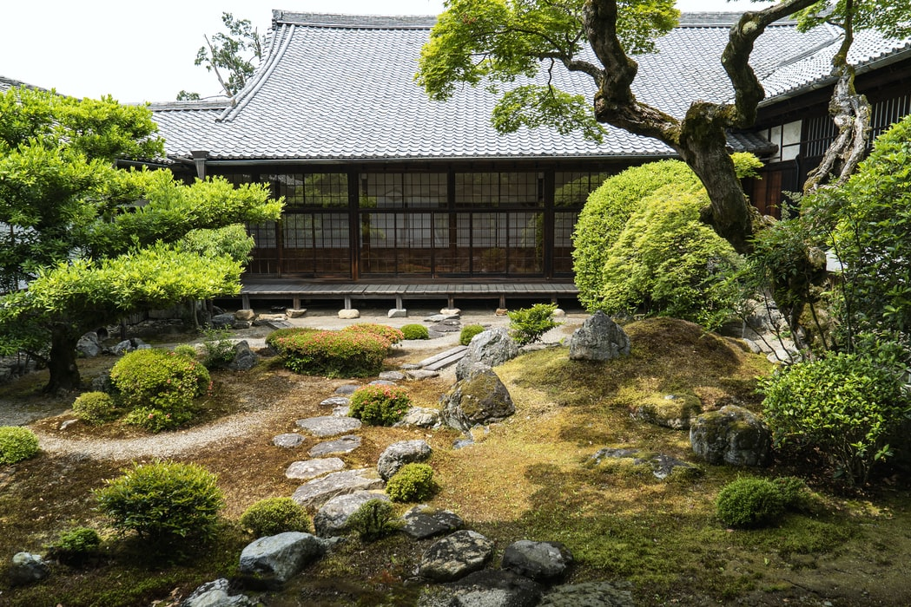
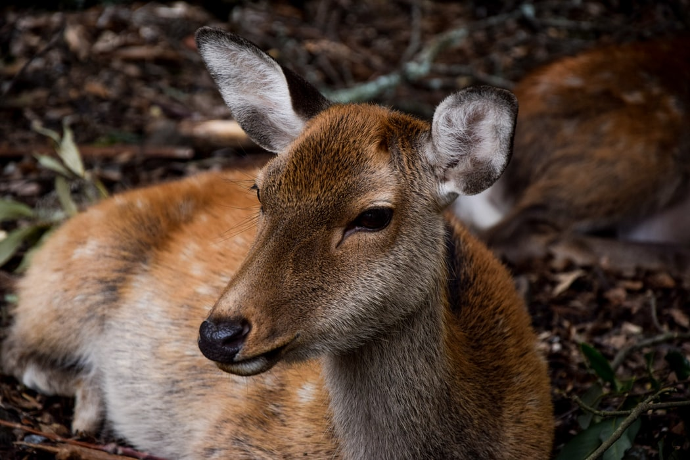

Discover the day-by-day itinerary, created just for you:
Day 01 - Arrival, Shibuya district and cat cafe
After a long flight take some time to discover Tokyo! Have a walk through Shibuya district, and stop-over at a cat cafe.

Day 02 - Edo-Tokyo Museum and Asakusa area
Take the morning to explore the Edo Museum, and learn about the history of Tokyo city. It will take several hours to fully immerse into it, so give yourself the afternoon for fabulous Asakusa area.

Day 03 - Nagoya castle then Kyoto
Take the Shinkansen bullet train to Nagoya, and spend some time visiting the castle and the zen garden. Then, take the afternoon bullet train to Kyoto.

Day 04 - Arashiyama area with Bamboo Grove, Tenryuji temple and the Monkey Park
Have a walking tour of the Arashityama district. Have a hike up to the Monkey Park and hang out with these animals at the top of the mountain. Then, climb down, walk through the Bamboo Grove and relax at the Tenryuji Temple.
Day 05 - Tea Ceremony, Samurai Museum, the best ramen ever, and Kimono experience
This is a day full of experiences! Start it up with a traditional tea ceremony, than walk over and learn all about the Samurai at the Samurai Museum. Have a ramen lunch like not other. For the evening, dress up in a traditional kimono and walk through Higashiyama district.

Day 06 - Full day excursion to Nara
Take the morning train to Nara, and walk through the Deer Park. Take the entrance to Todai-ji Temple and wonder at the awesome buildings and the world's biggest Buddha statue.
